공조냉동기계산업기사 (2007-03-04 기출문제)
1과목: 공기조화
1. 온수 순환량이 560 kg/h인 난방설비에서 방열기의 입구온도가 80℃, 출구온도가 72℃라고 하면 이 때 실내에 발산하는 현열량은 얼마인가?
- 4520 kcal/h
- 4250 kcal/h
- 4480 kcal/h
- 4840 kcal/h
(정답률: 78%)

2. 에어필터의 설치에 관한 설명이다. 틀린 것은?
- 공조기 내의 에어필터는 송풍기의 흡입측이면서 코일의 흡입측에 설치한다.
- 유닛형을 여러개 조합하여 설치할 경우는 지그재그가 되도록 한다.
- 필터에 공기흐름방향이 있는 경우는 역방향으로 설치되지 않도록 한다.
- 고성능 HEPA 필터 등은 송풍기의 입구측에 설치한다.
(정답률: 61%)
3. 배관의 직관부에서 압력손실이 적어질 수 있는 조건은?
- 관의 마찰계수사 클 때
- 관 길이가 길 때
- 관경이 클 때
- 유속이 클 때
(정답률: 80%)
4. 온도 30℃, 절대습도 ×=0.0271kg/kg'인 습공기의 수증기 열량과 습공기 열량의 비율은 약 몇 % 인가?
- 40
- .50
- 70
- 90
(정답률: 48%)
5. 다음 중 현열부하에만 영향을 주는 것은?
- 건구온도
- 절대습도
- 비체적
- 상대습도
(정답률: 70%)
6. 기계환기에서 실내압을 정압(+) 또는 부압(-)으로 유지할 수 있는 환기법은?
- 제 1종
- 제 2종
- 제 3종
- 제 4종
(정답률: 68%)
7. 덕트의 이음법 중에서 주로 직각방향의 이음에 사용되는 방법은?
- 피티버그 록
- S슬림
- 드라이브 슬림
- 스텐딩 시임
(정답률: 57%)
8. 온풍로 난방의 특징이 아닌 것은?
- 방열기나 배관 등의 서설이 필요 없으므로 설비비가 저렴하다.
- 열용량이 크므로 예열시간이 많이 걸린다.
- 토출 공기온도가 높으크로 쾌적도에서는 떨어진다.
- 보수 취급이 간단하다.
(정답률: 75%)
9. 다음 중 온수난방과 비교한 증기난방 방식의 장점이 아닌 것은?
- 방열면적이 작다.
- 설비비가 저렴하다.
- 방열량 조절이 용이하다.
- 예열시간이 짧다.
(정답률: 63%)
10. 단일덕트 변풍량방식에서는 VAV 유닛을 사용하여 실내를 제어하는데 VAV 유닛을 채용하는 가장 큰 이유는?
- 에너지절약
- 소음제거
- 취출공기 온도제어
- 냉충과 온풍의 혼합
(정답률: 60%)
11. 다음 중 노통 연관식 보일러의 장점이 아닌 것은?
- 비교적 고압의 대용량까지 제작이 가능하다.
- 효율이 높다.
- 동일용량의 수관식 보일러보가 가격이 싸다.
- 부하변동에 따른 압력변동이 크다.
(정답률: 64%)
12. 일정한 건구온도에서 습공기 성질의 변화에 대한 설명 중 잘못된 것은?
- 비체적은 절대습도가 높아질수록 증가한다.
- 절대습도가 높이질수록 노점온도는 높아진다.
- 상대습도가 높아지면 절대습도는 높아진다.
- 상대습도가 높아지면 엔탈피는 감소한다.
(정답률: 54%)
13. 보일러의 연소량을 일정하게 하고, 소비량에 비해 과잉일 경우 잉여증기를 저장하여 부족할 때 저장증기를 방출하는 장치는?
- 환원기
- 충진탑
- 축열기
- 절탄기
(정답률: 71%)
14. 공조장치의 구성 중 공기조화기(AHU)내에 설치되는 기기와 거리가 먼 것은?
- 에어핑터
- 공기냉각기
- 보일러
- 공기가열기
(정답률: 85%)
15. 다음 중 복사난방의 장점이 아닌 것은?
- 쾌적성이 좋다.
- 방열기나 배관이 작다.
- 실내의 상하 온도차이가 작다.
- 바닥에 기기를 배치하지 않아도 되므로 이용공간이 넓다.
(정답률: 75%)
16. 습공기선도에서 상태점 A의 노점온도를 읽는 방법으로 맞는 것은?
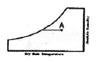
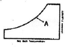
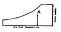
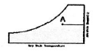
(정답률: 75%)
17. 다음 설명 중 옳은 것은?
- 각층 유니트 방식은 대규모 건물이며, 다층 건물에 적합 하다.
- 멀티존 유니트 방식은 에너지 절약상 유효 하다.
- 이중 덕트 방식은 실내 온습도 제어에 불리 하다.
- 유인 유니트 방식은 덕트 스페이스가 불필요 하다.
(정답률: 60%)
18. 강습장치에서 재생용 열원이 필요한 것은?
- 냉각식
- 압축식
- 흡수식
- 에어와셔식
(정답률: 66%)
19. 다음의 닥트계에서 송풍기의 전압은 얼마인가?
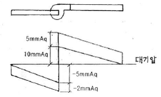
- 5 mmAq
- 17 mmAq
- 20 mmAq
- 22 mmAq
(정답률: 52%)
20. 상대습도 50%, 냉방의 감열부하가 7500kcal/h, 잠열부하가 2500kcal/h일 때 현열비(SHF)는 얼마인가?
- SHF = 0.25
- SHF = 0.65
- SHF = 0.75
- SHF = 0.85
(정답률: 72%)
2과목: 냉동공학
21. p-h 선도를 보고 이론 성적계수(c.o.p)를 구하면?
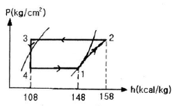
- 1
- 2
- 3
- 4
(정답률: 63%)
22. 흡수식 냉동기를 구성하는 기기들 중 냉각수가 필요한 기기의 구성으로 올바른 것은?
- 재생기와 증발기
- 흡수기와 응축기
- 재생기와 응축기
- 팽챙장치와 흡수기
(정답률: 44%)
23. 다음 중 브라인의 동결방지 목적으로 사용하는 기기가 아닌 것은?
- 온도 스위치
- 단수 릴레이
- 흡입압력조절밸브
- 증발압력조절밸브
(정답률: 63%)
24. 다음 중 무기질 브라인이 아닌 것은?
- NaCl
- MgCl2
- CaCl2
- C2H3O2
(정답률: 70%)
25. 냉동장치에 대해 설명한 것 중 옳은 것은?
- 흡수식 냉동기는 장치면적이 크나 분해조립이 간단하여 편리하다.
- 터보 냉동기는 진동 소음이 많아 대용량의 것에 적합하지 않다.
- 흡수식 냉동기는 압축식 냉동기나 터보 냉동기에 비하여 소음과 진동이 적다.
- 터보 냉동기는 저압 및 고압의 냉매를 사용하므로 가정용에 적합하다.
(정답률: 77%)
26. 냉동기유의 구비조건 중 특히 저온용 냉동기유의 조건은?
- 응고점이 낮을 것
- 인화점이 낮을 것
- 왁스 성분이 적을 것
- 항 유화성이 없을 것
(정답률: 41%)
27. 1HP는 약 몇 Btu/hr 인가?
- 172 Btu/hr
- 252 Btu/hr
- 1⑤2 Btu/hr
- 2547.6 Btu/hr
(정답률: 76%)
28. 냉동장치의 증발기의 종류 중 멀티피드 멀티샥숀식을 옳게 설명한 것은?
- 만액식의 암모니아용이며 입관과 강하관이 있고, 상부에서 유입한 액냉매는 강하관에서 증발기로 흐른다.
- 간접팽창 건식증발기이며, 주로 냉장고의 공기 냉각용에 사용된다.
- 직접팽창 건식증발기이며, 주로 브라인 냉각용에 사용한다.
- 간접팽챙 만액식이며, 공기조화용 냉각기에 사용되고 있다.
(정답률: 46%)
29. 어던 냉동장치의 게이지압이 저압은 60mmHgv, 고압은 6kgf/cm2 였다면 이 때의 압축비는 약 얼마인가?
- 5.8
- 6.0
- 7.4
- 8.3
(정답률: 48%)
30. 전열면적이 24m2 인 R-12횡형 응축기가 있다. 그 냉각관(나관)의 전열성능은 냉매측 열전달율 1250kcal/m2h℃, 냉각 수측 열전달율 2000kcal/m2h℃, 오염계수 0.0002m2h℃/kcal로 하고 관벽의 열전도 저항은 무시하는 것으로 한다. 또한 응축부하 120000kcal/h, 응축기입구에서의 냉각수온도 32℃, 응축온도 42℃라고 하면 이 때 필요한 냉각수량은 몇 ℓ/min인가? (단, 관의 내외 면적비를 1이라고 하고, 평균온도차는 산술평균 온도차로 계산한다.)
- 40
- 300
- 150
- 400
(정답률: 25%)
31. 응축기의 냉각 방법에 따른 분류에 속하지 않는 것은?
- 수냉식
- 증발식
- 증류식
- 공냉식
(정답률: 75%)
32. 냉매의 상태변화를 잘 알 수 있어 냉동사이클 해석(성적계수 및 압축비 등)에 가장 일반적으로 사용되는 선도는?
- 압력 - 비체적 선도
- 온도 - 엔트로피 선도
- 엔탈피 - 엔트로피 선도
- 압력 - 엔탈피 선도
(정답률: 55%)
33. 다음 설명한 고속다기통 압축기의 특성 중 틀린 것은?
- 각 부품의 화환성이 있다.
- 능력에 비해 소형이며 가볍다.
- 기통수가 많아 용량제어가 곤란하다.
- 무부하 기동이 가능하다.
(정답률: 78%)
34. 열펌프 장치의 이상적인 사이클은 무엇이며 그 과정이 옳은 것은?
- 역카르노사이클 : 단열압축-등온팽창-단열팽창-정적방열
- 카르노사이클 : 등온팽창-단열팽창-등온압축-단열압축
- 역카르보사이클 : 단열팽창-등온팽창-단열압축-등온압축
- 카르노사이클 : 단열압축-등압방열-단열팽창-등압흡열
(정답률: 49%)
35. 냉동장치의 압축기와 관계가 없는 효율은?
- 소음효율
- 압축효율
- 기계효율
- 체적효율
(정답률: 85%)
36. 부압작용에 의하여 진공을 만들어 냉동작용을 하는 것은?
- 증기분사 냉동기
- 왕복동 냉동기
- 스크류 냉동기
- 공기압축 냉동기
(정답률: 64%)
37. 역카르노 사이클로 작동하는 냉동기가 35마력의 일을 받아서 저온체로 부터 25kcal/sec의 일을 흡수한다면 고온체로 방출하는 열량은 약 얼마인가? (단, 1마력은 632.3kcal/h로 한다.)
- 21.15kcal/sec
- 31.15kcal/sec
- 41.15kcal/sec
- 61.25kcal/sec
(정답률: 48%)
38. 다음 중 모세관(Capillary tube) 사용시 주의점으로 틀린 것은?
- 고압측 액부분에 설치할 것
- 수내식 콘덴싱 유니트에는 사용하지 말 것
- 규격은 장치에 알맞는 것을 사용할 것
- 냉매충전량을 가능한 적게 할 것
(정답률: 48%)
39. 냉매의 응축온도 50℃, 응축기 냉각수 입구온도 25℃, 출구온도 35℃일 때 대수 평균 온도차를 구하면 약 얼마인가?
- 22.6℃
- 19.6℃
- 16.6℃
- 12.6℃
(정답률: 62%)
40. 팽창 밸브 입구에서 330kcal/kg의 엔탈피를 갖고 있는 냉매가 팽창 밸브를 통과해 압력이 내려가고 포화액과 포화증기의 혼합물 즉, 습증기가 됐다. 습증기 중의 포화액의 유량이 7kg/min 일 때 전 유출 냉매의 유량은 약 얼마인가? (단, 팽창밸브를 지난 후의 포화액의 엔탈피는 54kcal/kg 건포화증기의 엔탈피는 500kcal/kg 이다.)
- 113kg/min
- 18.4kg/min
- 17.4kg/sec
- 19.6kg/sec
(정답률: 42%)
3과목: 배관일반
41. 다음과 같은 증기 난방배관에 관한 설명으로 옳은 것은?
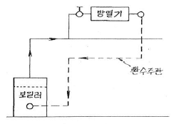
- 진공환수방식으로 습식 환수방식이다.
- 중력환수방식이며 건식 환수방식이다.
- 중력환수방식으로서 습식 환수방법이다.
- 진공환수방식이며 건식 환수방식이다.
(정답률: 67%)
42. 다음 중 밸브를 설치하지 않는 관은?
- 급수관
- 드레인관
- 통기관
- 급탕관
(정답률: 76%)
43. 급수 설비배관에서 수평 배관에 구배를 주는 이유로 합당치 못한 것은?
- 시공 및 재료비 감소
- 관유수의 흐름 원활
- 공기 정체 방지
- 장치 전체 수리시 물을 완전히 배수
(정답률: 76%)
44. 배관의 지지 목적이 아닌 것은?
- 배관계의 중량의 지지
- 진동에 의한 지지
- 온도 변화에 의한 배관계의 신축의 제한 지지
- 부식과 보온 지지
(정답률: 79%)
45. 다음 중 배수관 통기방식에서 가장 통기효과가 큰 것은?
- 각개 통기식
- 회로 통기식
- 환상 통기식
- 신정 통기식
(정답률: 67%)
46. 다음은 냉동배관 중 액관 시공상의 주의할 점을 열거한 것이다. 잘못된 것은?
- 매우 긴 입상 배관의 경우 압력이 증가하게 되므로 충분한 과냉각이 필요한다.
- 배관은 가능한한 짧게항 냉매가 증발하는 것을 방지한다.
- 2대 이상의 증발기를 사용하는 경우 액관에서 발생한 증발가스(flash gas)가 균등하게 분배되도록 배관한다.
- 증발기가 응축기 또는 수액기보다 8m 이상 높은 위치에 설치되는 경우는 액을 충분히 과냉각시켜 액 냉매가 관내에서 증발하는 것을 방지하도록 한다.
(정답률: 52%)
47. 다음 중 고압가스 배관재료의 배관 기호에 대한 설명으로 틀린 것은?
- SPP : 배관용 탄소 강관
- SPPH : 저압 배관용 탄소 강관
- SPLT : 저온 배관용 탄소 강관
- SPHT : 고온 배관용 탄소 강관
(정답률: 70%)
48. 급수 배관에서 워터해머 방지 또는 경감시키는 방법으로 옳지 않은 것은?
- 급격히 개폐되는 밸브의 사용을 제한한다.
- 피스톤형, 벨로즈형, 다이어프램형 등의 워터해머 흡수기를 설치한다.
- 관내의 유속을 1.5~2m/s 정도로 제한한다.
- 배관은 가능한 구부러지게 한다.
(정답률: 72%)
49. 연관의 장점이 아닌 것은?
- 가공성이 좋다.
- 신축성이 풍부하다.
- 중량이 가병며 충격에 강하다.
- 산에는 강하지만 알칼리성에는 약하다.
(정답률: 57%)
50. 온도 350℃ 이하, 압력 100kg/cm2 이상의 고압배관에 사용되며 관이 치수 표시는 호칭지름 x 호칭두께로 나타내는 것은?
- SPP
- SPPW
- SPPS
- SPPH
(정답률: 59%)
51. 허용응력이 35kg/mm2이고, 사용압력이 70kg/cm2인 강관의 스케줄 번호(schedule number)는?
- 20
- 35
- 70
- 1⑤
(정답률: 58%)
52. 다음 배관 밸브기호 중 콕 일반의 기호는?
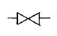
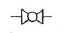
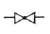
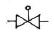
(정답률: 49%)
53. 고가 탱크식 급수설비에서 급수경로로서 올바르게 나타낸 것은?
- 수도본관 → 수수탱크 → 옥상탱크 → 양수관 → 급수관
- 수도본관 → 수수탱크 → 양수관 → 옥상탱크 → 급수관
- 수수탱크 → 옥상탱크 → 수도본관 → 양수관 → 급수관
- 수수탱크 → 옥상탱크 → 양수관 → 수도본관 → 급수관
(정답률: 64%)
54. 다음은 가스배관시 유의해야 할 사항을 열거한 것이다. 잘못된 것은?
- 배관은 지반이 동결됨에 따라 손상을 받지 아니하도록 적절한 깊이에 매설한다.
- 내관은 유지 관리상 건물지하에 배관하지 않는다.
- 매설관의 접속부나 매설관이 옥내로 들어오는 부분은 방식처리를 한다.
- 유지관리를 위해 가능한 콘크리트내 매설을 해주는 것이 좋다.
(정답률: 79%)
55. 다음 중 용어 연결이 맞는 것은?
- 온수난방 - 잠열
- 증기난방 - 팽챙탱크
- 온풍난방 - 팽창관
- 복사난방 - 평균복사온도
(정답률: 72%)
56. 다음의 개방식 팽창탱크 주위에 설치되는 배관 중 관련 없는 것은?
- 배기관
- 팽창관
- 오버플로관
- 압축 공기관
(정답률: 56%)
57. 배관된 관의 수리, 교체에 편리한 이음방법은?
- 용접이음
- 신축이음
- 플랜지이음
- 스위블이음
(정답률: 77%)
58. 다음의 관재료에 관한 설명이 옳지 않은 것은?
- 동관 - 탄산가스를 포함한 공기중에는 푸른녹이 생긴다.
- 스테인레스강관 - 저온 충격성이 크고 한랭지 배관이 가능하다.
- 연관 - 해수나 천연수에도 관표면에 불활성 탄산연막을 만들어 부식을 방지한다.
- 알루미늄관 - 해수, 가성소다, 염산 등 알칼리에 강하다.
(정답률: 50%)
59. 다음 그림과 같은 배관장치에서 부하의 변동에 대하여 강치에 흐르는 수량은 변화시키지 않고, 순환수의 온도차로서 대응시키도록 (A)부에 설치하는 밸브는?
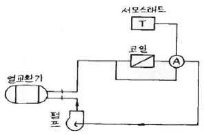
- 3방밸브(3 way valve)
- 혼합밸브(mixing valve)
- 2방밸브(2 way valve)
- 바이패스 장치밸브
(정답률: 55%)
60. 고정된 배관 지지부 간의 거리가 10m라 할 대 만일 온도가 현재보다 150℃ 상승한다면 몇 mm 나 팽창되겠는가? (단, 금속배관 재료의 열팽창율은 6×10-6(1/℃)이다.)
- 9
- 60
- 90
- 900
(정답률: 32%)
4과목: 전기제어공학
61. 그림과 같은 신호흐름선도의 선형방정식은?
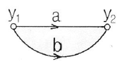
- y2=(a+2b)y1
- y2=(a+b)y1
- y2=(2a+b)y1
- y2=2(a+b)y1
(정답률: 70%)
62. 그림과 같은 피드백 블럭선도의 전달함수는?
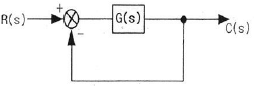
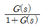
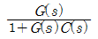
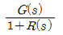
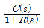
(정답률: 70%)
63. 120°를 라디안[rad]으로 표시하면?
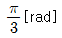
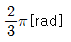
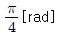
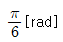
(정답률: 68%)
64. 다음 ( )안의 ①, ②에 알맞은 것은?
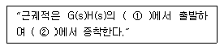
- ① 영점, ② 극점
- ① 극점, ② 영점
- ① 분지점, ② 극점
- ① 극점, ② 분지점
(정답률: 68%)
65. 전원 전압을 일정하게 유지하기 위해서 사용되는 소자는?
- 트라이액
- SCR
- 제너다이오드
- 터널다이오드
(정답률: 57%)
66. 동일 규격의 축전지 2개를 병렬로 연결한 경우 옳은 것은?
- 전압과 용량이 각각 2배가 된다.
- 전압은 1/2배, 전압은 2배가 된다.
- 용량은 1/2배, 전압은 2배가 된다.
- 전압은 불변이고, 용량은 2배가 된다.
(정답률: 59%)
67. 다음 중 프로세스 제어에 속하는 것은?
- 장력
- 압력
- 전압
- 저항
(정답률: 68%)
68. 시퀀스제어에 관한 설명 중 옳지 않은 것은?
- 조합 논리회로도 사용된다.
- 시간 지연요소도 사용된다.
- 유접점 계전기만 사용된다.
- 제어결과에 따라 조작이 자동적으로 이행된다.
(정답률: 70%)
69. 저속이지만 큰 출력을 얻을 수 있고, 속응성이 빠른 조작기기는?
- 유압식 조작기기
- 공기압식 조작기기
- 전기식 조작기기
- 기계식 조작기기
(정답률: 68%)
70. 디지털 입력을 아날로그 출력으로 변환하는 D-A 컨버터를 선택하는데 있어서 중요한 요소가 아닌 것은?
- 정확도
- 시정수
- 정밀도
- 변환속도
(정답률: 59%)
71. 직류 타여자전동기의 계자전류를 1/n로 하고 전기자 회로의 전압을 n배로 하면 속도는 어떻게 되는가?
- 1/n2배
- 1/2배
- 2n배
- n2배
(정답률: 41%)
72. 다음 중 서보기구에 있어서의 제어량은?
- 유량
- 위치
- 주파수
- 전압
(정답률: 73%)
73. 직류전동기의 속도제어방법이 아닌 것은?
- 계자제어법
- 직렬저항법
- 병렬저항법
- 전압제어법
(정답률: 61%)
74. 플레밍(Fleming)의 오른손 법칙에 따라 기전력이 발생하는 원리를 이용한 기기는?
- 교류 발전기
- 교류 전동기
- 교류 정류기
- 교류 용접기
(정답률: 69%)
75. 컴퓨터 제어의 아날로그 신호를 디지털 신호로 변환하는 과정에서, 아날로그 신호의 최대값을 M, 변환기의 bit수를 3이라 하면 양자화 오차의 최대값은 얼마인가?
- M
- M/2
- M/7
- M/8
(정답률: 68%)
76. 역률이 80% 인 부하에 전압과 전류의 실효값이 각각 100V, 5A 라고 할 때 무효전력[Var]은?
- 100
- 200
- 300
- 400
(정답률: 34%)
77. 소형 전동기의 절연저항 측정에 사용되는 것은?
- 브리지
- 검류계
- 메거
- 훅크온메타
(정답률: 68%)
78. 저항 100Ω의 전열기에 4의 전류를 흘렸을 때 소비되는 전력은 몇 W 인가?
- 250
- 400
- 1600
- 3600
(정답률: 56%)
79. 그림과 같은 계전기 접점회로의 논리식은?
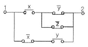
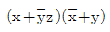
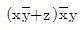
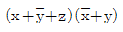
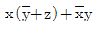
(정답률: 54%)
80. 최대 눈금 10mA, 내부저항 6Ω의 전류계로 40mA의 전류를 측정하려면 부류기이 저항은 몇 Ω 인가?
- 2
- 20
- 40
- 400
(정답률: 28%)
물의 비열은 1 kg당 1℃ 온도 상승시 발생하는 열의 양이므로, 1 kg의 물이 1℃ 상승하는데 필요한 열의 양은 1 kcal이다.
따라서, 방열기의 입구온도가 80℃이고 출구온도가 72℃이므로, 1 kg의 물이 8℃의 온도강하를 겪는다.
560 kg의 물이 8℃의 온도강하를 겪으므로, 발산하는 현열량은 560 kg × 8 ℃ × 1 kcal/kg℃ = 4480 kcal/h 이다.
따라서, 정답은 "4480 kcal/h"이다.